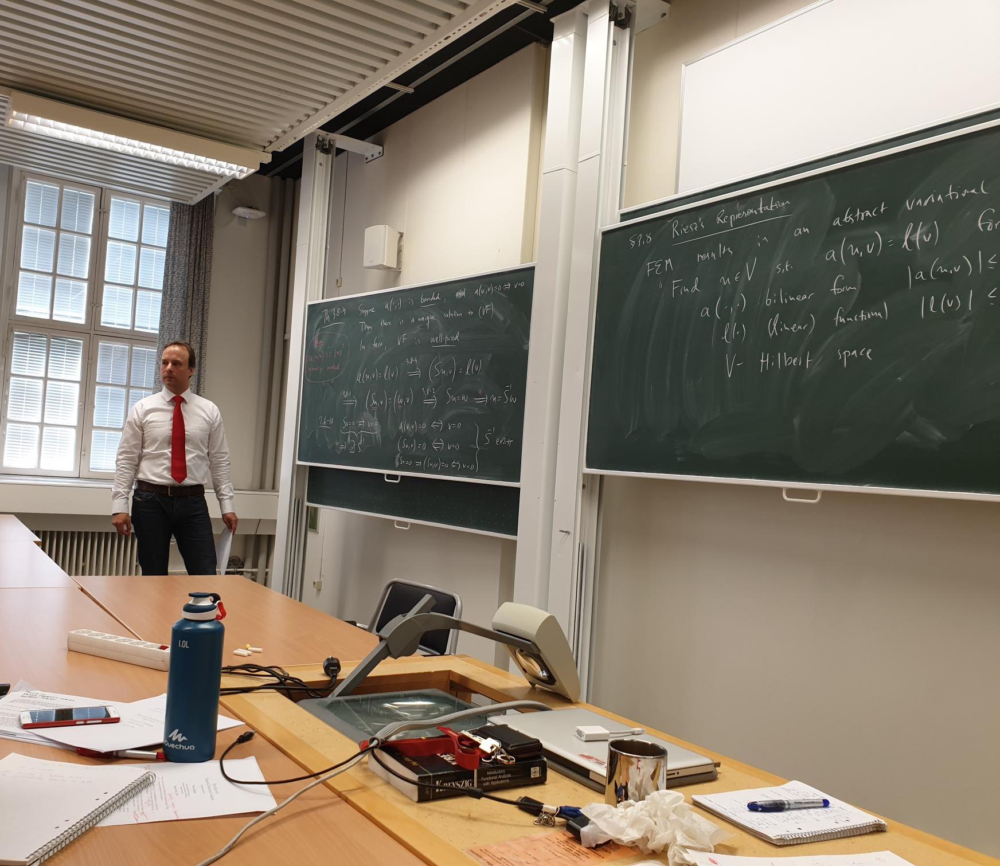
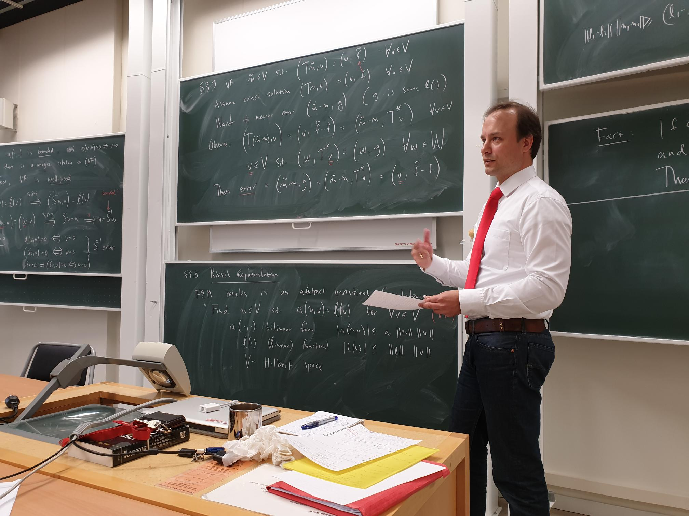

{% include base_path %}
 
Fall 2024: Project course in
Computational Science 1TD307 (15.0hp).
Spring 2024: module Stochastic
add-on (graduate course).
Fall 2023: module Foundations of
probabilistic modelling (graduate course).
Fall 2023: Project course in
Computational Science 1TD307 (15.0hp).
Spring 2022: Numerical Functional Analysis (7.5hp, graduate
course)
Spring 2022: Scientific Computing III 1TD397 (5.0hp).
Fall 2021: Scientific Computing III 1TD397 (5.0hp).
Spring 2020: Scientific Computing I 1TD393 (5.0hp).
Spring 2020: Numerical methods in stochastic modeling and simulations (7.5hp, graduate
course).
Fall 2019: Scientific Computing II 1TD395 (5.0hp).
Previously also given 2018, 2017, 2016, 2015.
Spring 2019: Numerical Functional Analysis (7.5hp, graduate
course)
Fall 2017:Advanced Numerical
Methods 1TD050 (10.hp)
Fall 2016: Advanced Numerical
Methods 1TD050 (10.hp)
Spring 2016: Numerical methods in stochastic modeling and simulations (7.5hp, graduate
course).
Fall 2014: Numerical Functional Analysis (5.0hp, graduate
course).
Spring 2014: Finite element methods II 1TD254 (5.0hp).
Fall 2012: Finite element methods 1TD253 (5.0hp).
Spring 2012: Classic Articles in Numerical Analysis (7.5hp, graduate course).
Fall 2010: Finite element
methods 1TD253 (5.0hp).